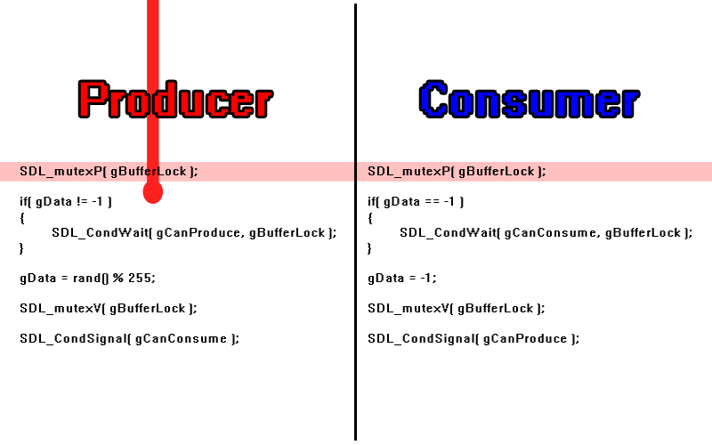
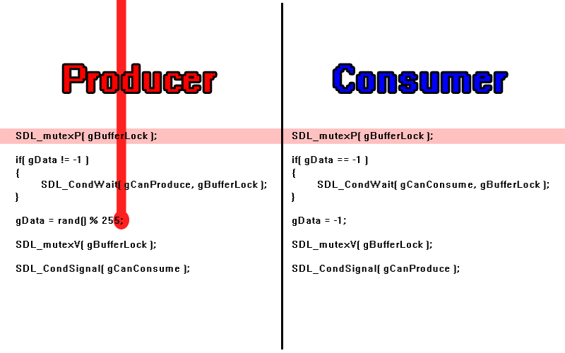
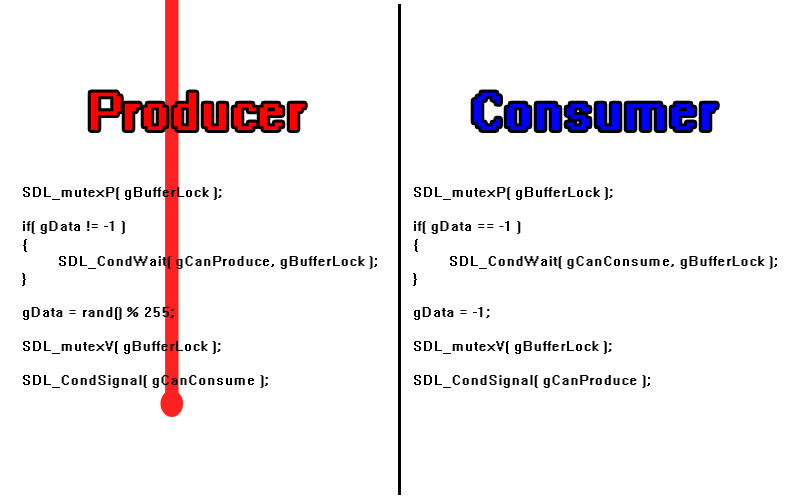
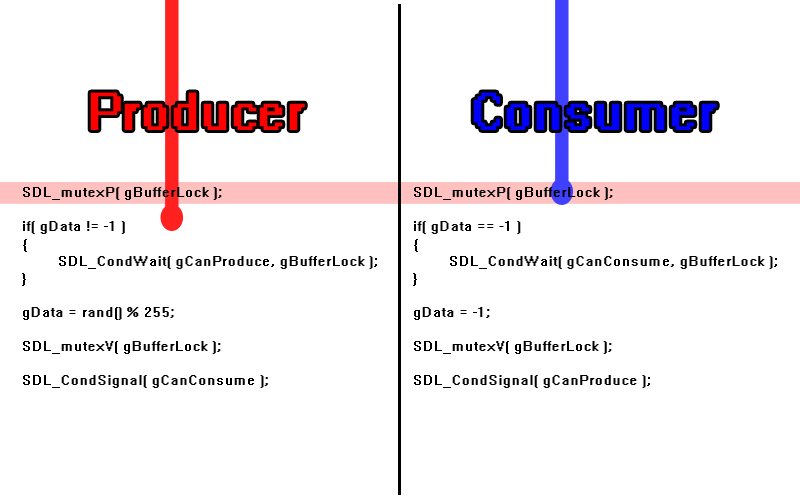
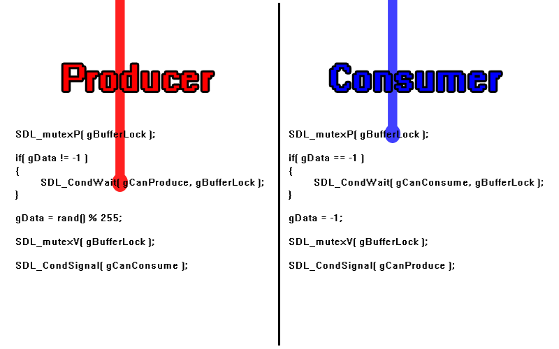
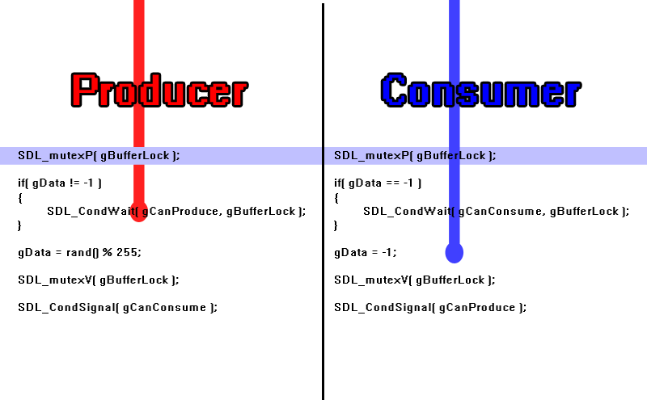
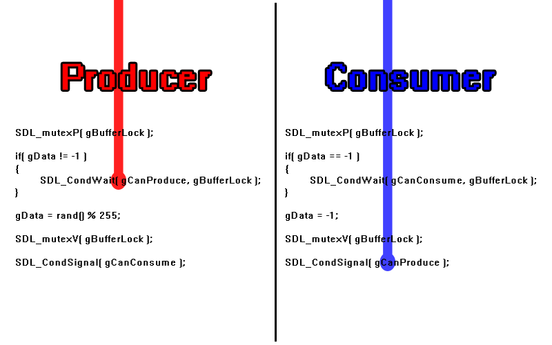
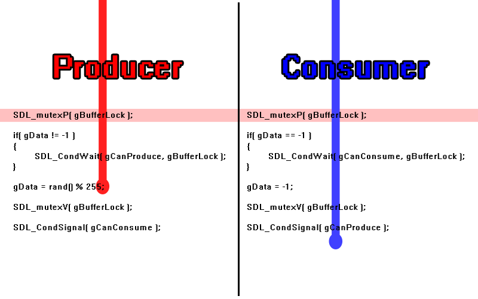

Mutexes and Conditions
Last Updated 6/14/15
Not only can you lock critial sections in threads, but with mutexes and conditions it is possible for threads to tell each other when to unlock.//Our worker functions
int producer( void* data );
int consumer( void* data );
void produce();
void consume();
For this demo we'll have two threads: a producer which fills a buffer and a consumer that empties a buffer. Not only can the two threads not use the same buffer at the same time, but
a consumer can't read from an empty buffer and a producer can't fill a buffer that's already full.
We'll use a mutex (mutually exclusive) to prevent the two threads from grabbing the same piece of data and conditions to let the threads know when they can consume and can produce.
We'll use a mutex (mutually exclusive) to prevent the two threads from grabbing the same piece of data and conditions to let the threads know when they can consume and can produce.
//The protective mutex
SDL_mutex* gBufferLock = NULL;
//The conditions
SDL_cond* gCanProduce = NULL;
SDL_cond* gCanConsume = NULL;
//The "data buffer"
int gData = -1;
Here we're globally declaring the mutex and conditions that will be used by the threads.
bool loadMedia()
{
//Create the mutex
gBufferLock = SDL_CreateMutex();
//Create conditions
gCanProduce = SDL_CreateCond();
gCanConsume = SDL_CreateCond();
//Loading success flag
bool success = true;
//Load splash texture
if( !gSplashTexture.loadFromFile( "49_mutexes_and_conditions/splash.png" ) )
{
printf( "Failed to load splash texture!\n" );
success = false;
}
return success;
}
To allocate mutexes and conditons we use SDL_CreateMutex and
SDL_CreateCond respectively.
void close()
{
//Free loaded images
gSplashTexture.free();
//Destroy the mutex
SDL_DestroyMutex( gBufferLock );
gBufferLock = NULL;
//Destroy conditions
SDL_DestroyCond( gCanProduce );
SDL_DestroyCond( gCanConsume );
gCanProduce = NULL;
gCanConsume = NULL;
//Destroy window
SDL_DestroyRenderer( gRenderer );
SDL_DestroyWindow( gWindow );
gWindow = NULL;
gRenderer = NULL;
//Quit SDL subsystems
IMG_Quit();
SDL_Quit();
}
And to deallocate mutexes and conditions we use SDL_DestroyMutex and
SDL_DestroyCond.
int producer( void *data )
{
printf( "\nProducer started...\n" );
//Seed thread random
srand( SDL_GetTicks() );
//Produce
for( int i = 0; i < 5; ++i )
{
//Wait
SDL_Delay( rand() % 1000 );
//Produce
produce();
}
printf( "\nProducer finished!\n" );
return 0;
}
int consumer( void *data )
{
printf( "\nConsumer started...\n" );
//Seed thread random
srand( SDL_GetTicks() );
for( int i = 0; i < 5; ++i )
{
//Wait
SDL_Delay( rand() % 1000 );
//Consume
consume();
}
printf( "\nConsumer finished!\n" );
return 0;
}
So here are our two worker threads. The producer tries to produce 5 times and the consumer tries to consume 5 times.
void produce()
{
//Lock
SDL_LockMutex( gBufferLock );
//If the buffer is full
if( gData != -1 )
{
//Wait for buffer to be cleared
printf( "\nProducer encountered full buffer, waiting for consumer to empty buffer...\n" );
SDL_CondWait( gCanProduce, gBufferLock );
}
//Fill and show buffer
gData = rand() % 255;
printf( "\nProduced %d\n", gData );
//Unlock
SDL_UnlockMutex( gBufferLock );
//Signal consumer
SDL_CondSignal( gCanConsume );
}
void consume()
{
//Lock
SDL_LockMutex( gBufferLock );
//If the buffer is empty
if( gData == -1 )
{
//Wait for buffer to be filled
printf( "\nConsumer encountered empty buffer, waiting for producer to fill buffer...\n" );
SDL_CondWait( gCanConsume, gBufferLock );
}
//Show and empty buffer
printf( "\nConsumed %d\n", gData );
gData = -1;
//Unlock
SDL_UnlockMutex( gBufferLock );
//Signal producer
SDL_CondSignal( gCanProduce );
}
Here are the functions that produce and consume. Producing a buffer means generating a random number and consuming a buffer mean reseting the generated number. The best way to show
how this works is go through an example.
Let's say the producer fires first and locks the mutex with SDL_LockMutex much like it would a semaphore with a value of one:
The buffer is empty so it goes through and produces:
It then exits the function to unlock the critical section with SDL_UnlockMutex so the consumer can consume:
Ideally, we would want the consumer to consume, but imagine if the producer fired again:
And after the producer locked the critical section the consumer tries to get it but the critical section is already locked to the producer:
What the condition allows us to do is if the buffer is already full, we can wait on a condition with SDL_CondWait and unlock the mutex for other threads:
Now that the consumer is unlocked it can go through and consume:
And once it's done it signals the producer with SDL_CondSignal to produce again:
And then it can continue through:
With the critical section protected by a mutex and the ability of the threads to talk to each other, the worker threads will work even through we do not know in which order they will execute.
Let's say the producer fires first and locks the mutex with SDL_LockMutex much like it would a semaphore with a value of one:

The buffer is empty so it goes through and produces:

It then exits the function to unlock the critical section with SDL_UnlockMutex so the consumer can consume:

Ideally, we would want the consumer to consume, but imagine if the producer fired again:
And after the producer locked the critical section the consumer tries to get it but the critical section is already locked to the producer:

With just a binary semaphore, this would be a problem because the producer can't produce into a full buffer and the consumer is locked behind a mutex. However, mutexes have the
ability to be used with conditions.What the condition allows us to do is if the buffer is already full, we can wait on a condition with SDL_CondWait and unlock the mutex for other threads:

Now that the consumer is unlocked it can go through and consume:

And once it's done it signals the producer with SDL_CondSignal to produce again:

And then it can continue through:

With the critical section protected by a mutex and the ability of the threads to talk to each other, the worker threads will work even through we do not know in which order they will execute.